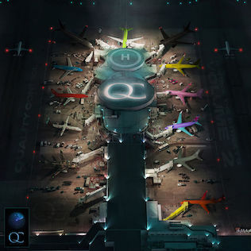

Song of the Day

August
24th
2020
24th
2020
The Adults Are Talking | The Strokes
Fair warning, Julian Casablanca's falsetto will have you screaming in the shower. The intro to a fantastic 2020 album by The Strokes
August 24th, 2020
November
18th
2019
18th
2019
Mile High | James Blake
Travis Scott & Metro Boomin bring some hip-hop to James Blake's slowtempo style. A dark, wavy vibe for 2AM listening (or if you're me 24/7)
November 18th, 2019
November
11th
2019
11th
2019
Häagen Dazs | Ghetto Sage
Introducing Ghetto Sage, the collective of our favorite Chicago rappers today: Noname, Saba, and Smino. Another fire project by the trio, enjoy.
November 11th, 2019
November
1st
2019
1st
2019
Petrol Bliss | Choker
Choker is an up and coming pop artist who reminds me of Frank Ocean. The song shows off his versatility, one of my favorites of 2019
November 1st, 2019

October
26th
2019
26th
2019
Baby | Lil Baby & DaBaby
Wheezy produced the beat, so you know it's gas. Song just hits right. When I listen to it, it makes me want to put on my stank face
October 26th, 2019
October
23rd
2019
23rd
2019
Keeping Tabs | Cuco
Cuco and Suscat0 combine simple melodies, lo-fi psychadelic sounds, and love-inspired content to create peaceful, playful, nostalgic vibes
October 23rd, 2019